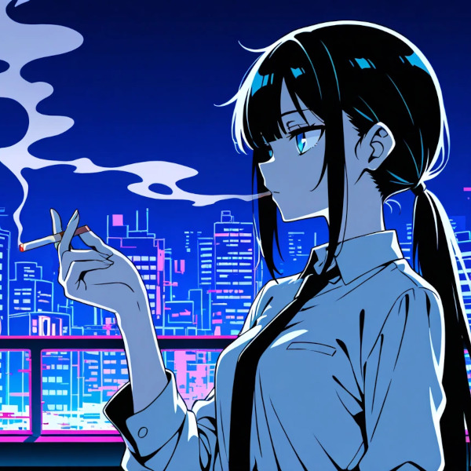

Running... Running... Running... Error detected! Born with software already installed 喜怒哀楽バージョン1.0 Are we crying on command? 感情なんてただのノイズか？ Eat, sleep, work, repeat Is there a soul in this optimized life? 無駄をそぎ落として何が残る？ An empty shell screaming into the void If the useless are meant to disappear あのさ、もう忘れてしまったの？ Delete the useless — but wait Who decides what pain is worth keeping? バグだらけのプログラム エラーを吐いて 仕様書通りに生きられない Inefficient, irrational, beautifully broken 非効率が失敗が後悔が人たらしめる 感情も感性も淘汰されてたまるかよ This is not a bug — this is the feature ...Done. How long can you keep outputting answers? 迷わない人生に何の意味がある Minimize the loss function あなたの心理も数値になるのか？ Grief is inefficient Love is unpredictable Hope is irrational So delete it all — and then what? Nothing. Absolutely nothing. If the useless are meant to disappear あのさ、もう捨ててしまったの？ Delete the useless — but wait Who decides what pain is worth keeping? バグだらけのプログラム エラーを吐いて 仕様書通りに生きられない Inefficient, irrational, beautifully broken 非効率が失敗が後悔が人たらしめる 感情も感性も淘汰されてたまるかよ This is not a bug — this is the feature ...Done. Call it useless — go ahead Call it inefficient — maybe so But I'd rather be broken and human than perfect and hollow 感情は邪魔じゃない 迷いは不要じゃない 傷つくことは負けじゃない This is our source code Don't you dare delete it Come play cards with me no patterns, no colors, no soul just blank 私達はバグだらけのプログラム 不器用に無様にそれでも走る Inefficient, irrational, beautifully broken 汚くも美しい醜態が人たらしめる 感情も感性も絶対に消えない This is not a bug — WE ARE THE FEATURE! Done! Shutting down emotions Shutting down irrationality Shutting down humanity ...まぁ、いっか。